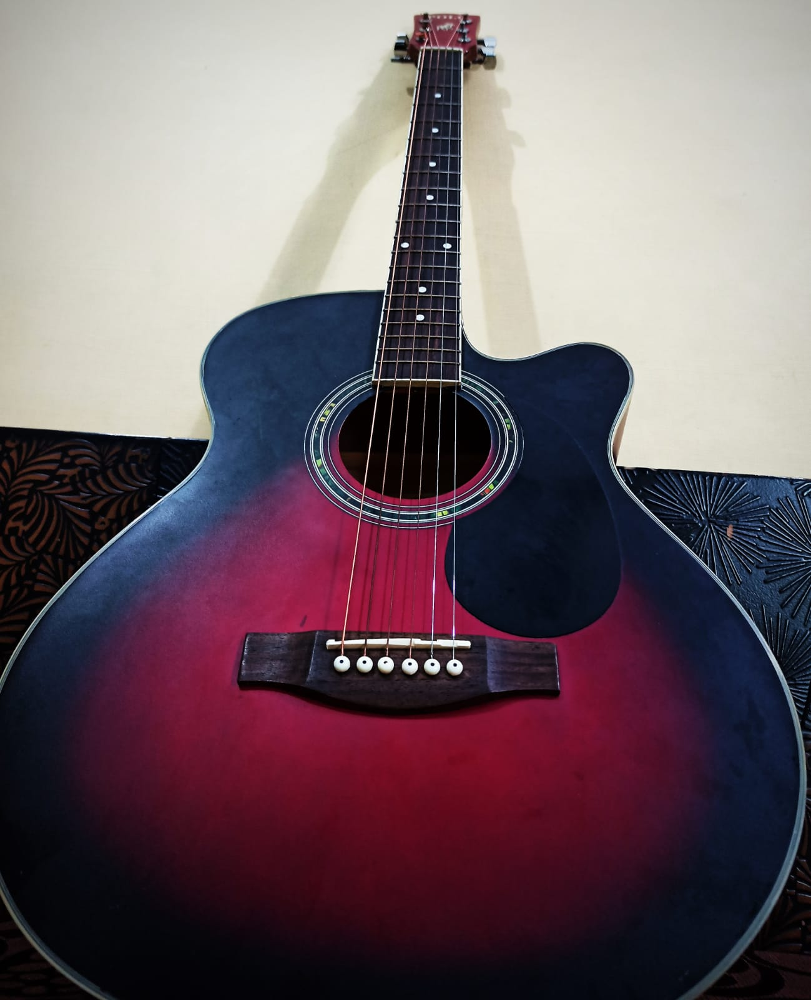

-
Playing Guitar
-
Coding
- C Programming -
- Advanced HTML -
- Intermediate CSS -
- I have also started learning C++
- I am also learning basics of JavaScript
-
Reading books
- The Bhagavad Gita
- Ikigai(The Journey)
- The Art of War - Sun Tzu
-
Learning about Geopolitics
-
Working out
- Calistheics
- Strength Training
- Skipping rope
I have been playing guitar since 6th grade.
I mainly played acoustic chords till i was in 11th grade.
This is my acoustic guitar :
In 11th grade i really got into rock genre and also bought myself an electric guitar
This is my electric guitar :
Here's a library of guitar covers i have done :
CoversI started coding after coming to KIIT Here are the skills i have acquired after starting coding :
With the help of my teacher i learned 'C', I have a great understanding of the topics such as Loops,Functions,Structures & File Handling.

I started attending a bootcamp for HTML & CSS which made me do research on my own about the topic and i started learning Html.

I started attending a bootcamp for HTML & CSS which made me do research on my own about the topic and i started learning CSS.
To learn about the concept of OOPs.With this knowledge of C++,I want to get in the feild of Competitive Coding


I love reading books.
Here is my book collection :
These are the most recent books i have read :


Geopolitics explains how countries, businesses, terrorist groups, etc.Try to reach their political goals by controlling geographic features of the world.We call these features geographical entities.Geographical entities are the places,regions, territories, scales, and networks that make up the world.
Here are the types of workout's i like to do :